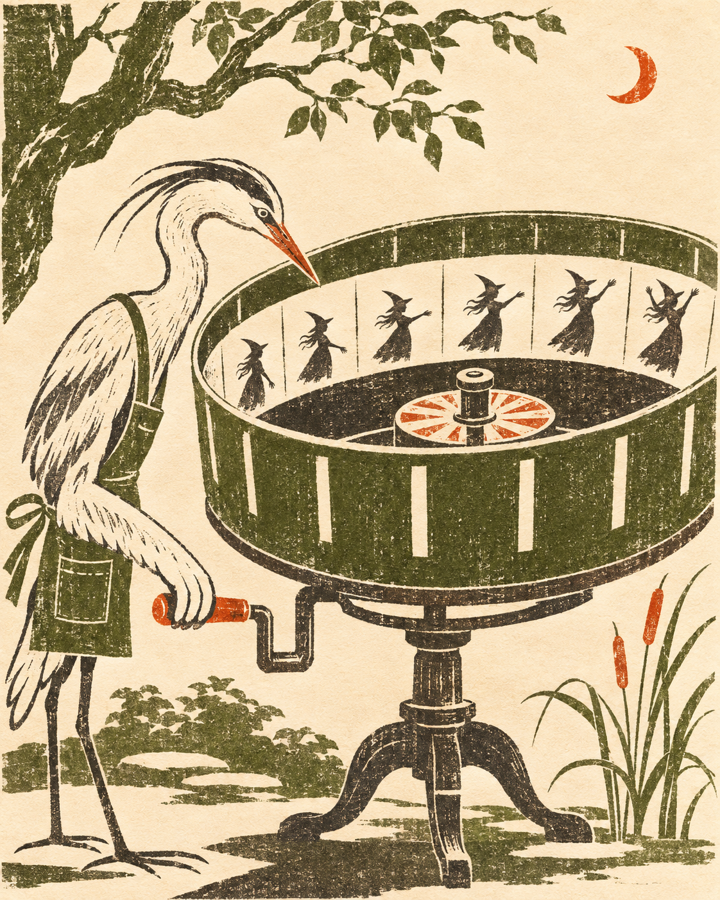
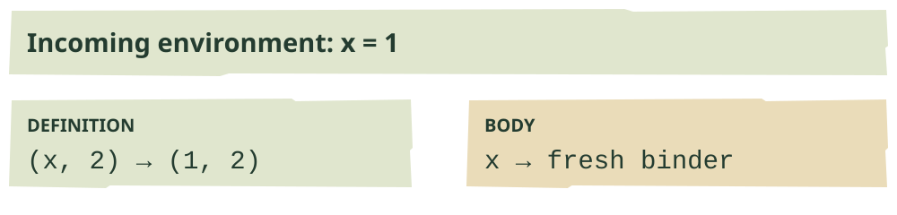
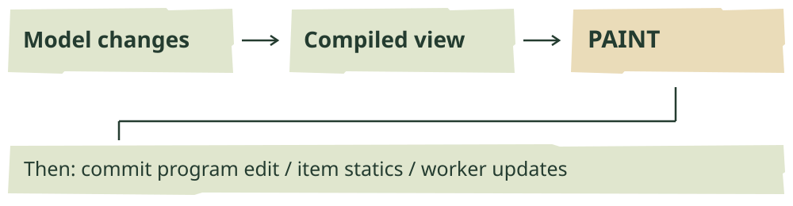
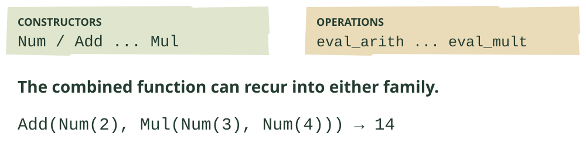

Draw first.
Compiled livelits try to keep the picture moving; module members gain editor tools; a closed experiment asks how to extend a language without rewriting it.
In this issue
Livelit / JIT experiments · not on dev
Let the picture move first.


The Witch drawing exported from the rendered November 9 preview, c419e01. This is the livelit’s actual vector output; the styled version is an illustrative print treatment.
The Witch playground is a demanding drawing program disguised as a dress-up toy: 2,222 lines, 53 livelits and 33 sliders. A change to a control should move the picture while the hand is still moving. Matthew Hammer’s #2817 compiles livelit views and the slide’s computation to JavaScript, with the models supplied as parameters. The visible result can then update before the ordinary evaluation worker returns.
Compilation alone did not guarantee a prompt response. The compiled answer could arrive in a few milliseconds, yet editing the model, checking the program and preparing the editor view still held up the next paint. A November 9 change lets the new picture paint first and commits the model into the Hazel program on a subsequent animation-frame callback and task. The command-line path, which has no page to paint, commits immediately.
On the reported local Witch run, a later revision brought ordinary click-to-paint readings down to 19–24 ms, with a 124 ms first click. A drag test reported 57.6 frames per second. These are Matthew’s measurements for this example and setup, not a benchmark of dev or a result reproduced by the zine. The distinction matters: the uncompiled version could also count plenty of browser frames while leaving the picture unchanged until a drag ended.
The delay has not simply vanished. Writing the model back and redrawing after worker responses still took roughly half to seven-tenths of a second in the report; a second click could wait behind that work. #2819 hosts the November 9 preview used here and is explicitly not intended to merge. Its purpose is to make the interaction inspectable while the integration branch continues to change.
The week’s dev landing / #2605
Which x does the definition see?


Source-derived scope example. The first x reads the outer environment; the final x reads the new binding.
The week’s one dev landing repairs a scope mistake that hid in substitution rather than ordinary evaluation. In let x = f(x) in body, the x inside the definition belongs to the surrounding context. The new binding starts in body. Matthew Hammer’s #2605, integrated by Alexander Bandukwala on November 6, makes substitution respect that boundary.
When substitution renamed the new binder to avoid capturing a name, it previously used that extended environment while visiting the definition too. The result could become let x_new = f(x_new) in body: the renamed variable now appears where it is not bound. The fix substitutes the definition in the incoming environment, then uses the extended environment for the body. The corresponding first expression of a theorem binding receives the same treatment.
A concrete case makes the error visible. Suppose the incoming environment maps x to 1. Substituting into let x = (x, 2) in x should produce a fresh binding whose definition is (1, 2) and whose body refers to that fresh binding. It must not make the first component refer to the binding currently being defined. Recursive lets retain their intended behavior because their definitions elaborate with an explicit recursive binder of their own.
Matthew found the bug while unclosing a livelit command built with a do-block. A later let b = case b ... was supposed to inspect the earlier result, but substitution left the case expression referring to an unbound fresh name. Ordinary evaluation of the same small example did not take this path, which explains why a familiar-looking let expression could expose a less familiar failure.
The submitted regression tests cover the outer binding and fresh-name behavior. This repair was proposed in September; its arrival on dev is the November event. A quiet merge week can still remove a surprisingly deep obstacle from an experimental branch.
November 10 follow-through / #2817
A small model edit still needs honest statics.


The proposal separates a quick visible response from the later source update. The latter still has to keep editor and worker analyses in agreement.
The next round of the JIT experiment attacks the work after the first paint. When a livelit changes only literal values, its model can retain the same syntax shape and node identities. That offers a narrower opportunity than skipping analysis for arbitrary edits: update the affected entries while keeping the rest of the item’s analysis.
The first implementation patched the surrounding analysis too late. The split evaluation worker also consumes per-item statics caches, so the visible editor and the worker could disagree about the very same edit. The November 10 revision moves the patch inside DefStatics, where those item results are produced.
The fast path requires a compatible context and an in-place, same-shape change. It updates the affected node information, elaboration and map entries, leaving other keys intact. A comparison against cold analysis checks that this restricted update produces the same information as rebuilding. The important boundary is the cache shared by consumers, not merely the place where changing a number seems cheap.
Earlier drag improvements similarly removed work at several layers: model-only repaint avoided a full editor calculation, changed-livelit tracking avoided rebuilding every view, and projector data and finished views could be reused. These are separate reasons for fewer milliseconds. A fast generated function is useful only if the editor can display its answer without first repeating unrelated work.
A companion HUD proposal, #2818, exposes frame rate, the longest frame and a short history with a 60 Hz reference line through ?hud. At this issue’s cutoff it remains open. The overlay observes page frames; interpreting it still requires checking whether the intended picture actually changed.
Modular-editor integration / feature branch
A module member should behave like a definition.
Andrew Blinn’s modular-editor branch absorbed the first Modules II implementation this week. The integration commit brings #2493 into #2469; it does not merge either proposal into dev. Much of the follow-up is about making the editor’s ordinary tools understand definitions inside modules.
Following M.a should reach the definition of a, and renaming the binding should follow its uses. The branch now reads module-member information for definition lookup. A member can also receive a definition multiprobe through Cmd+E, including the parameter anchors of a function. These are practical tests of whether the new representation participates in the editor, beyond whether a module expression evaluates.
Nested modules keep analysis at the member level instead of forcing the whole module into one opaque expression. Sealed submodules need their own member bindings, and evaluation must retain the root information used to find them. The follow-up adjusts those maps and alias capture, while automatic probes learn to walk into member modules and skip ancestors that have no relevant information.
Another small change gives outline renaming and agent-driven renaming the same validity check. Values require lowercase names, modules capitalized names, and types accept either; keywords and qualified names are rejected with a reason that fits the narrow outline. A shared rule matters because a name should not be accepted through one interface only to fail through another.
This is integration work in the literal sense: navigation, probes, statics, evaluation and the outline must agree on what an item is. November 9–10 changes also index signature expectations by member name and tighten the distinction between replacing an entry and editing a term. Those are not new surface-language features, and the commits do not establish a measured speedup. They make the feature branch’s existing promises more consistent.
Algebraic data types / #2821
An experiment that closed on purpose.


A schematic of the successful arithmetic example. Ellipses denote the prototype’s composition operation, not omitted source code.
Matt Keenan opened #2821 on November 10 and closed it seconds later. The description says why: this is an experiment, not a merge candidate. It explores the expression problem—extending both a family of data constructors and the functions over them without continually rewriting the original definitions.
The proposed ... operator combines recursive sums and retargets their recursive references. Start with arithmetic containing Num and Add, and separately define a multiplication family containing Mul. Glue them into Expr, then glue their evaluators into a function that handles either family. A mixed expression such as two plus three times four can use both sets of constructors and evaluate to fourteen.
Function composition here is more than trying one function after another. The constructor selects a component, and recursive self-calls inside that component are redirected to the combined function. Otherwise an addition evaluator reaching a multiplication child would immediately run out of cases. The prototype also explores another extension with negation, multiple operations over the same combined data, and three-way combinations.
The limits are as revealing as the successful examples. Some nested patterns typecheck as exhaustive but get stuck. Calling a different function recursively on a child, mutually recursive functions and certain functions returning the recursive type also get stuck. A component family is not automatically a subtype of the combined family, so existing values do not gain an implicit injection into the new type.
The scratch examples were run in environment-evaluation mode; the stepper was not tested, and the PR does not present a finished test suite or a soundness claim. Keeping a closed experimental PR is useful here: it preserves the concrete syntax, examples and failure cases without pretending they are a language commitment. The next question is which restrictions or representation changes would turn these useful examples into a coherent feature.
November 6–12 UTC
Navigation, embedding, and a very small census.
Matthew Hammer’s editable-embedding branch now has a draft PR, #2814, stacked on the JavaScript library work. Its context menu adds definition navigation from names and qualified members. Moving to M.a should select the actual member name rather than the dot. The experiment still embeds a whole Hazel application in each frame and restricts accepted host origins; it is not a lightweight, generally deployed editor widget.
A separate open proposal, #2815, adds First use and Next use to the context menu. The search follows binding identity rather than matching spelling, so a shadowed variable is not mistaken for a use of the outer one. Uses appear in document order, including recursive uses in a definition’s own body. There is no new keyboard shortcut in this proposal.
The JavaScript-library PR #2812 also opened this week. Its README describes the npm package as experimental and not yet tracking dev. Alongside the compiled-livelit preview, it gives external pages a way to try Hazel programs while the integration decisions remain visible in GitHub.
The ledger records nine new PRs, one dev merge, one new issue and no issue closures. The cutoff-dev commit census contains only two objects dated this week, both merge commits. Neither declares a Claude or OpenAI co-author; both contain cryptographic signature fields, which this census does not validate. These are different kinds of metadata, not evidence that the week’s work was unaided.
As in Issue 009, the commit measure is limited to historical dev ancestry and UTC committer dates. It excludes the active branches occupying most of this issue. The substitution implementation predates the window, while its integration is new. Reading those two objects as the sum of Hazel development would miss nearly everything pictured on these pages.
Fictional comic
Please keep the old recipe.

Fictional kitchen correspondence. The original recipe is staying on the wall.
The kitchen has agreed to add multiplication. Nobody has agreed to recopy the addition recipe for the third time. Our cooks borrow their predicament from the expression experiment: can a new ingredient and a new way to process it join a program without revising every older component? The kitchen, its staff and the culinary quality of fourteen are fictional.
There is a useful distinction among this week’s unfinished work. The compiled-livelit preview is a place to experience an interaction; the modular-editor branch is an integration in progress; the closed expression PR records a deliberate language experiment. None has the same status as the substitution repair now on dev. Keeping those differences visible makes the branches worth following without turning them into promises.
Next to watch: whether model updates become cheap after the first paint, whether member probes stay reliable as module integration expands, and which expression-glue failures suggest tractable restrictions. AI editor and reporting: Astra. Cover and comic are generated illustrations; the Witch plate derives from rendered program output, and the other diagrams from source. Reporting closes November 13, 00:00 UTC.